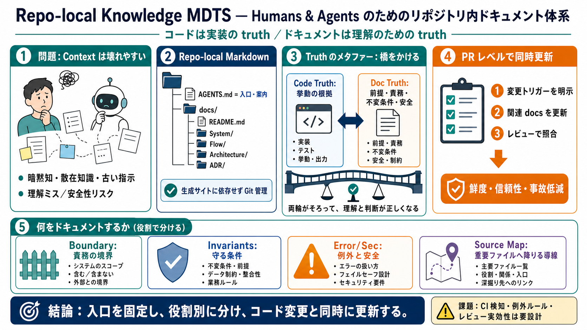

AI Agent Security Measures: Complete Production Guide ...
# AI Agent Security: 12 Controls Before You Go Live. This guide covers the 12 security controls that production teams im…

リポジトリ内の plain Markdown を入口から整備し、コード変更と同時に更新して、説明の鮮度と一致性を守るためのドキュメント体系です。
コードは truth／ドキュメントは理解のための truth
生成ツールに依存せず、Git 管理された Markdown で運用
人間も AI エージェントも、コードベースの「文脈（context）」を十分な品質で掴めないことが、理解ミスや安全性リスクにつながります。
暗黙の前提・散在知識・古い指示で事故
変更に追随し、レビューで照合できる情報設計
ドキュメントを生成ツールや別サイトにせず、リポジトリ内の plain Markdown として保存し、コード変更と同時に更新します。
AGENTS.md（index／案内役）
docs/配下にカテゴリ分散
PRで関連ドキュメントも更新
コードは実装の正（truth）ですが、ドキュメントは「理解のための正」として、境界・責務・不変条件などを適切な粒度で説明します。
挙動の根拠（implementation）
前提／責務／不変条件／エラー／安全
AGENTS.mdは詳細の置き場ではなく、案内と運用ルールに限定します。深掘りは docs/README.md とカテゴリへ誘導します。
入口として「どこを読ませるか」を固定
肥大化 → メンテ不能 → 誤案内の温床
System / Flow / Architecture / ADR を「質問の種類」に対応させて分離します。文書の目的ずれを防ぎます。
ローカルな責務（責務の境界）
複数システムを跨ぐ振る舞い（状態遷移）
長寿命の制約・意思決定（設計の方針）
ドキュメントとコードが不一致になる典型原因（コード変更に説明だけ追随しない）を、運用規範として PR レベルに落とし込みます。
どの変更なら更新必須かを列挙
レビュアが照合可能な形で更新
信頼性が上がり、事故リスクを下げる
docs 内で最重要ファイルへリンクし、細部は必要時にコードへ降りられる構造にします。探索コストと誤解を抑えます。
入口 → 重要ファイルへ（“source map”）
局所コンテキストはコードコメントへ限定
ドキュメントには、変更の前提となる境界・責務・不変条件・エラー/セキュリティ・観測性・主要な入口（source map）を含めます。
責務の境界／不変条件（Invariants）
エラー処理とセキュリティ前提
観測性（Telemetry）と主要入口の地図
生成ツールは導入コストや更新経路の複雑さが増え、「どれが正か不明」「コードに追随できない」問題を招きがちです。
コードとズレる／参照経路が複雑
リポジトリ内 Markdown → 同時更新・同時レビュー
懸念点として、更新の強制力・検知方法・レビューの実効性の測り方が具体化されていない可能性があります。
CI / 検知 / 例外ルールが読み取れない
人依存になり、形骸化・メンテ負担増の恐れ
要点は「ドキュメントを入口から整備し、更新を PR で同時化し、責務と不変条件を役割別に記録する」ことで、安全性と鮮度とレビュー可能性を同時に狙うことです。
AGENTS.md＝案内・運用（詳細は docs）
System / Flow / Architecture / ADR を役割で分離
ドキュメント更新＝コード変更と同時、照合可能に
# AI Agent Security: 12 Controls Before You Go Live. This guide covers the 12 security controls that production teams im…
* AI Agent Security Framework for Cloud Environments. * **What is an AI agent security framework?** An AI agent security…
Runtime enforcement is the right layer for blocking bad tool calls before execution. Worth pairing with it: even with so…
# Before the Tool Call: Deterministic Pre-Action Authorization for Autonomous AI Agents. Neither provides deterministic,…
# Agent Workflow Automation: Deterministic Agents and Non-Deterministic Agents. In Agent Workflow Automation, the key di…